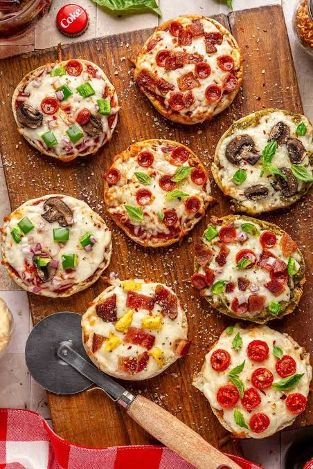

Pizzas
Home
Muffin Pizzas

These delicious muffin pizzas are a fun twist on the classic pizza, perfect for a quick and easy meal.
Ingredients
- 1 cup all-purpose flour
- 1 teaspoon baking powder
- 1/2 teaspoon salt
- 1/4 cup butter, melted
- 3/4 cup milk
- 1 egg
- 1/2 cup shredded cheese
- 1/4 cup diced tomatoes
- 1/4 cup diced bell peppers
- 1/4 cup diced onions
Instructions
- Preheat the oven to 375°F (190°C).
- In a bowl, mix the flour, baking powder, and salt.
- In another bowl, whisk together the melted butter, milk, and egg.
- Combine the dry and wet ingredients until just mixed.
- Pour the batter into a greased muffin tin, filling each cup about 2/3 full.
- Bake for 15-20 minutes until golden brown.
- Remove from the oven and let cool for a few minutes.
- Add your favorite toppings and serve hot.